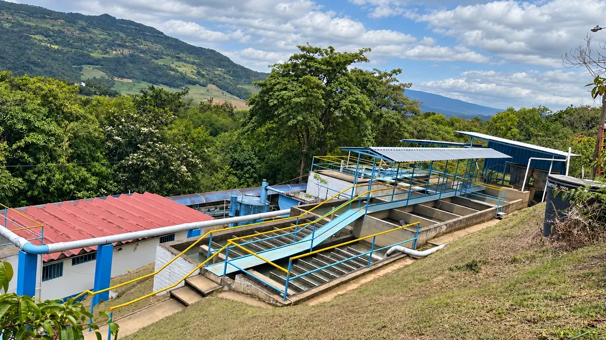
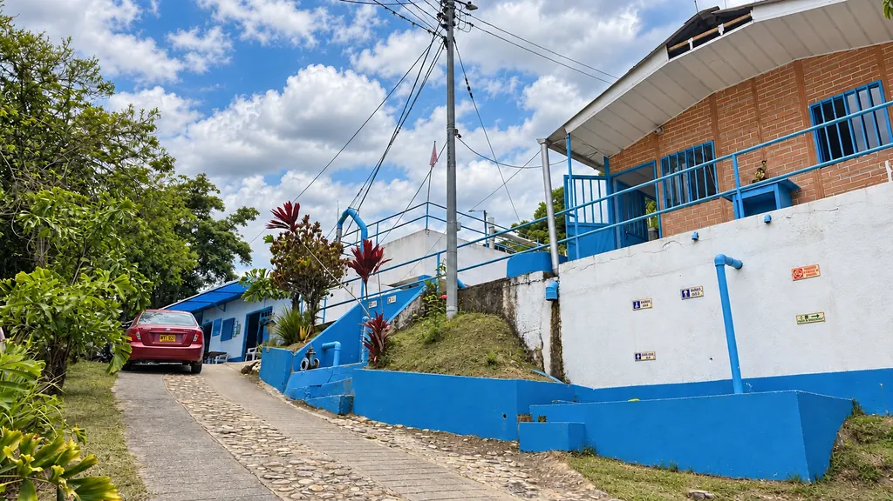

Acueducto
Servicio de agua potable para la comunidad de Güepsa. Una conexión esencial para la vida diaria.
Acueducto, alcantarillado y aseo al servicio de Güepsa. Trabajamos por lo que nos conecta: nuestra comunidad.

Lo esencial, cada día: agua potable, saneamiento básico y bienestar colectivo.
Estamos presentes en lo cotidiano, con servicios esenciales para los hogares y el entorno de nuestro municipio.
Selecciona un servicio para ver cómo te orientamos.
Servicio de agua potable para la comunidad de Güepsa. Una conexión esencial para la vida diaria.
Servicio de saneamiento básico que contribuye al manejo de las aguas residuales de nuestro municipio.
Servicio de aseo para acompañar el cuidado de los espacios que compartimos como comunidad.

Somos la Corporación de Servicios de Agua Potable y Saneamiento Básico del municipio de Güepsa, departamento de Santander.
Nuestra labor reúne los servicios de acueducto, alcantarillado y aseo: tres formas de aportar al bienestar de nuestra gente y al cuidado del lugar que llamamos hogar.
Según el profesor e historiador Luis Amadeo Gaona Cepeda, desde la época indígena Güepsa se ha servido de las aguas del río Suárez —llamado por los indígenas río Sarabita— y de la quebrada El Ropero.
Antes de tener acueducto, la población urbana se surtía del agua de algunos aljibes locales; para bañarse, la gente iba a las duchas públicas de Segundo Herreño, en la llamada «calle de los tramposos», en la parte occidental del pueblo.
La Sociedad de Acueductos y Alcantarillado de Santander, junto con la comunidad, construye el acueducto con el agua del aljibe Las Florez, en predios de la familia Herrera Santamaría, vereda Santa Rosa. Surtía a 130 familias.
El acueducto alcanza 162 suscriptores.
Ante las deficiencias del servicio, el Instituto Nacional de Salud (INAS) y la comunidad de Güepsa firman un contrato para construir un nuevo acueducto y reemplazar el deteriorado, manejado por Emposan desde su creación.
Se inician los trabajos del nuevo acueducto.
Después de algunas interrupciones, se inaugura la obra. La reseña destaca la colaboración del INAS seccional Santander y de su director, el ingeniero Guillermo Lozano Bravo, y la entrega del señor Alfonso Hernández Cárdenas, auxiliar técnico del INAS, que acompañó la obra durante toda su ejecución.
Fuente: reseña histórica de Corpoguepsa, a partir de la investigación del profesor e historiador Luis Amadeo Gaona Cepeda.
Conoce nuestra planta, la sede y el entorno que compartimos con la comunidad.
Consulta los documentos institucionales y la información de interés público de Corpoguepsa.
¿Tienes una consulta sobre nuestros servicios?
Comunícate con nosotros a través de estos canales.
Corpoguepsa presta los servicios de acueducto, alcantarillado y aseo en el municipio de Güepsa, Santander.
Puedes llamar o escribir por WhatsApp al 316 784 6946, o enviar un correo a corpoguepsa@gmail.com.
Comunícate directamente con la corporación para consultar horarios, requisitos de trámites y novedades de los servicios. Consultar por WhatsApp.
Agua potable para la vida cotidiana de la comunidad de Güepsa.
Consulta con Corpoguepsa la cobertura y las condiciones de conexión para tu vivienda o establecimiento.
Ten a mano la dirección y una descripción de tu consulta. Si reportas una fuga, indica el lugar exacto y evita manipular la red pública.
Para conocer los requisitos y horarios de atención vigentes, comunícate directamente con la corporación.
Saneamiento básico y manejo de aguas residuales para nuestro municipio.
Solicita información sobre la disponibilidad y los requisitos de conexión a la red en tu dirección.
Evita arrojar aceites, toallas húmedas o residuos sólidos al desagüe. Al reportar una novedad, comparte la ubicación y una descripción de lo que observas.
Consulta con Corpoguepsa los requisitos, la cobertura y los horarios de atención vigentes.
El cuidado de los espacios que compartimos empieza con nuestra comunidad.
Confirma los días, puntos y horarios de recolección correspondientes a tu sector directamente con Corpoguepsa.
Presenta los residuos en bolsas cerradas y consulta el horario antes de sacarlos. Para residuos especiales o voluminosos, pregunta por el manejo adecuado.
Los horarios de recolección y de atención deben confirmarse con la corporación según tu sector.